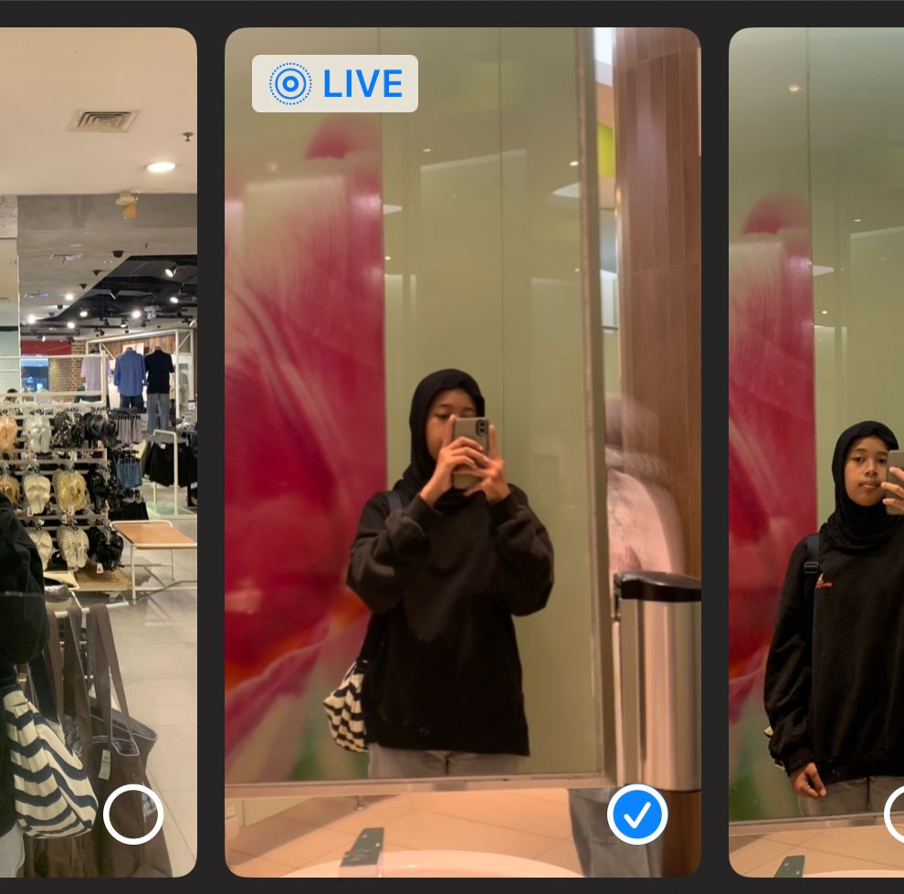
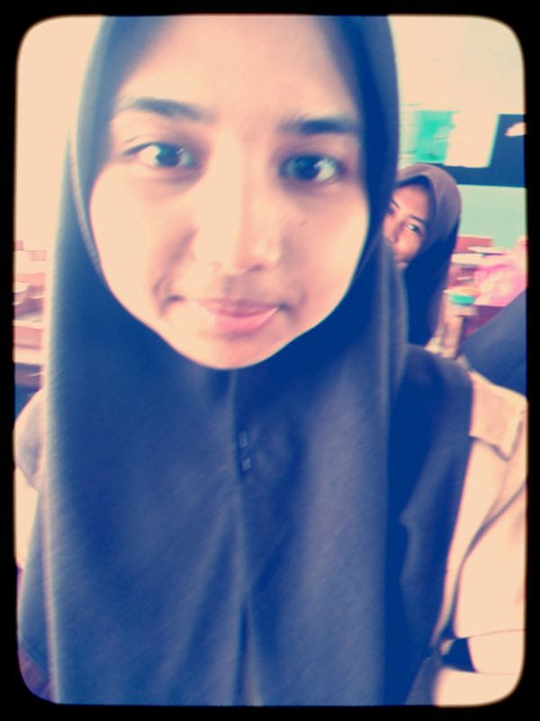
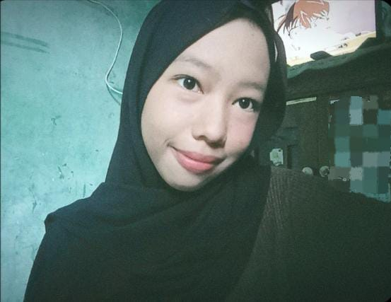
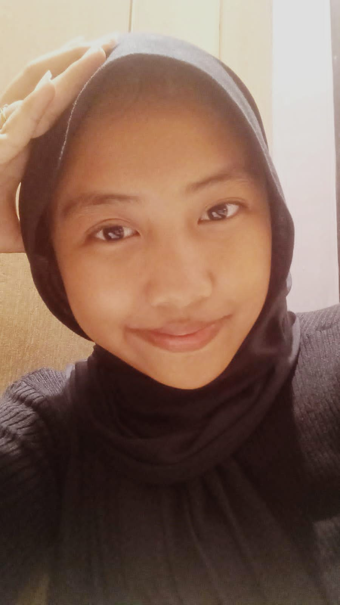
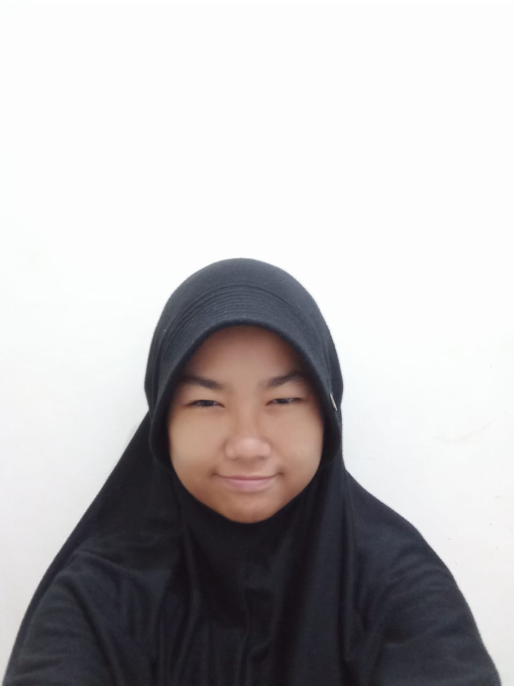
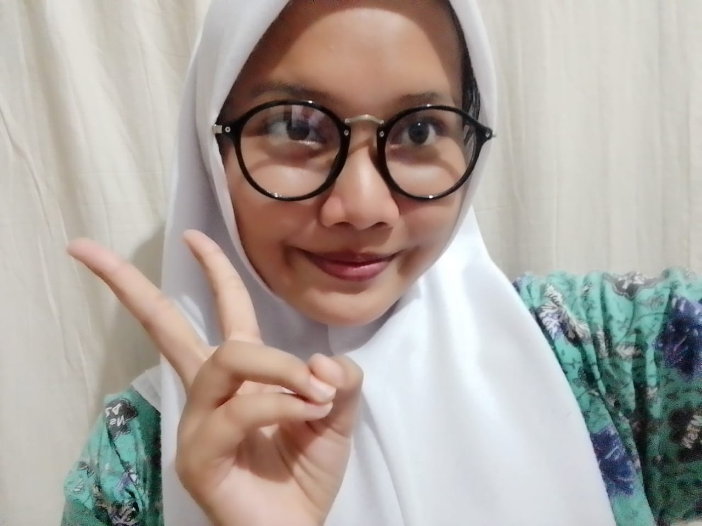
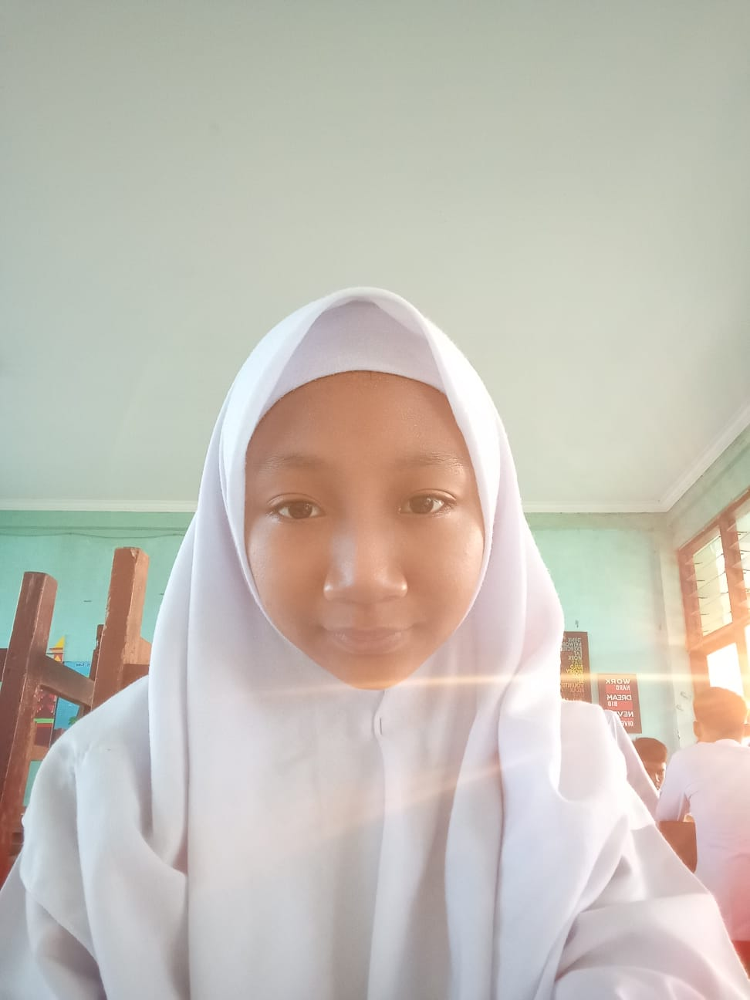

Profile Singkat
Bio data
biografi shaqinah
shaqinah razika putri fadilah lahir di jakarta 08 April 2010.Dia SD di Sdi Al-hadirriyyah,Sekolah Smp Di Mtsn 24 Jakarta.shaqinah suka warna biru ga suka warna ungu,dia juga suka jalan jalan.shaqinah suka makan ayam goreng dan nasi kebuli.
zevanna unaya lahir di bekasi 17 Januari 2010,Dia SD di Al-Wathonniyah 22,Sekolah Smp Di MtsN 24 Jakarta.zevanna suka warna pink ga suka warna orange,dia juga suka menggambar.zevanna suka makan ayam dan nasi kebuli
biografi khanza

khanza adni khalifah lahir di bekasi 21 maret 2010,dia SD di MI Al-Wathnoniyah 22,Sekolah Smp di MTsN 24 Jakarta.khanza suka warna merah tapi gasuka warna pink,dia juga suka masakk,khanza suka makan ikan dan nasi kuning
biografi keyssha aurel
keysha aurelia putri lahir di Jakarta 10 oktober 2009,dia SD di SDN Pondok Kopi 04,sekolah smp di MTsN 24 Jakarta.keysha suka warna kuning ga suka warna biru,dia juga suka main tembak tembakan,keysha aurel suka makan telor dadar dan nasi putih.
biografi annisa
annisa mardatillah lahir di Jakarta 01 juni 2010,dia SD di SDS Al-Aziz ,sekolah smp di MTsN 24 Jakarta.annisa suka warna biru tapi ga suka warna hitam,dia juga suka main sepatu roda di taman,annisa suka makan rendang dan suka nasi uduk dekat rumahnya
biografi wafiq
mifftahul wafiq al-amiry lahir di bekasi 28 mei 2010,dia SD di MI Al-Wathonniyah,sekolah smp di Mtsn 24 Jakarta.wafiq suka warna pink,dia suka jalan jalan dia gamau diam hobbynya bermain,wafiq suka ikan bandeng dan suka nasi daun jerukbiografi iffah
iffah azzahro lahir di bontang 31 januari 2010,dia SD MIN 1 pontianak,sekolah smp di MTsN 24 Jakarta.iffah suka warna hijau ga suka warna kuning,dia suka membaca buku,iffah suka makan dendeng dan suka tumpeng.
biografi keyla
keyla rasiqha destina lahir di jakarta 19 desember 201,dia SD di SDN malaka jaya 12,sekolah smp di MTsN 24 Jakarta.dia suka warna hitam tidak suka warna ungu,dia suka bermain di taman,keyla suka makan ayam bakar dan nasi padang
biodata galuh
galuh retno anjani lahir di jakarta 22 januari 2010,dia sd di SDI Al-Musalifiyyah,sekolah smp di MTsN 24 Jakarta.dia suka warna ungu ga suka warna merah,dia suka menulis cerita,galuh suka makan daging rendang dan suka nasi putih